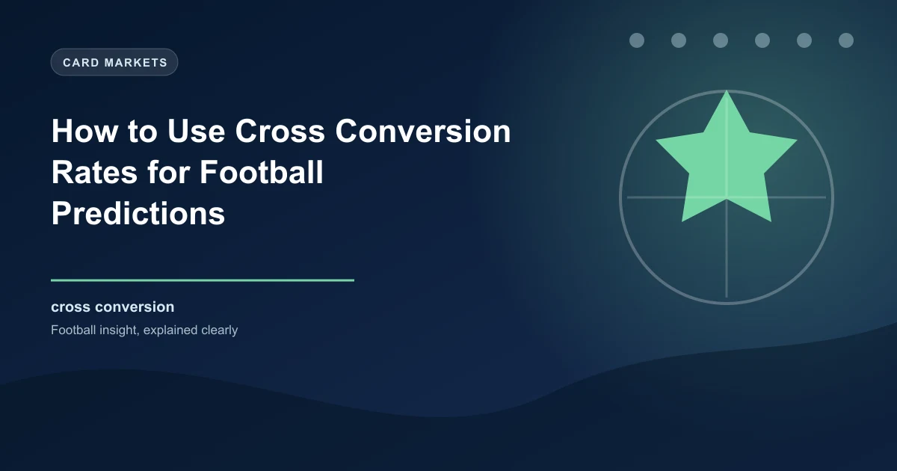

Crossing is one of football's oldest and most fundamental attacking weapons. From the earliest days of the sport to the modern era, teams have used wide areas to deliver balls into the box and create scoring opportunities. Yet crossing remains one of the most misunderstood aspects of football when it comes to betting. Many bettors focus on the volume of crosses without considering the effectiveness of those crosses, and this distinction is where genuine predictive value lies. Cross conversion rate, the percentage of crosses that create goal-scoring opportunities, is a metric that can significantly improve the accuracy of your football predictions across multiple betting markets.
Cross conversion rate is calculated by dividing the number of crosses that result in a shot or clear goal-scoring opportunity by the total number of crosses attempted. A standard cross conversion rate in professional football sits somewhere between 20 and 30 percent, meaning that roughly one in four or five crosses creates a genuinely dangerous situation. Teams with cross conversion rates above 30 percent are performing above average in this area, while those below 20 percent are struggling to make their wide play effective.
It is important to distinguish cross conversion from cross completion. Cross completion measures the percentage of crosses that reach a teammate, which is a much simpler metric that does not account for the quality or danger of the delivery. A cross can be completed, meaning it reaches a teammate's head or feet, but if it is delivered to a player in a non-threatening position, the completion does not translate into a scoring opportunity. Cross conversion focuses on the end product, making it a far more useful metric for predicting goal-scoring probability.
The data for cross conversion is available from advanced analytics platforms such as StatsBomb, Opta, and Wyscout, which track the trajectory, destination, and outcome of every cross delivered in professional matches. FBref provides accessible cross data for major leagues, including crosses attempted, crosses completed, and the outcomes that follow. For bettors, understanding this data provides a window into a team's attacking effectiveness that goes beyond the basic statistics most people rely on.
Finding cross conversion data requires accessing the right platforms and knowing what to look for. FBref, powered by StatsBomb data, lists crosses in the passing section of team and player statistics. The figure labelled "Crosses" represents total attempts, and by comparing this to shot-creating actions that originate from wide areas, you can approximate the cross conversion rate. Understat and WhoScored provide additional context through their expected goals and chance creation data, which can be filtered to identify chances created from crosses.
When interpreting cross conversion data, the first thing to establish is the baseline. Different leagues have different crossing cultures, and what constitutes a high or low conversion rate varies accordingly. In the Premier League, where physical defending and aerial duels are prominent, cross conversion rates tend to be slightly lower than in La Liga, where technical quality on the delivery and in the box tends to produce more dangerous outcomes from crosses. The Bundesliga, with its attacking emphasis, typically sees higher cross conversion rates due to the more open defensive structures that teams play against.
Player-level data is particularly revealing. Wingers and full-backs who consistently deliver high cross conversion rates are creating genuine value for their teams. A full-back who attempts five crosses per match with a 30 percent conversion rate is creating 1.5 dangerous opportunities per game purely from wide deliveries. When this player is absent, the team's ability to threaten from wide areas drops significantly, which can be measured in reduced shot creation and fewer goals from open play.
Certain tactical systems and teams place a disproportionate emphasis on crossing as their primary route to goal. These teams can be identified by their high cross volumes relative to the league average, combined with the tactical profiles of their wide players and strikers.
In the Premier League, teams with traditional wide forwards or attacking full-backs tend to lead the crossing statistics. Burnley under previous management were the archetypal crossing team, delivering a high volume of balls into the box from wide positions with physical strikers positioned to attack them. Teams that play with a target man, a tall and powerful centre-forward who excels in aerial duels, naturally gravitate toward crossing as their primary attacking method because the tactical setup favours this approach.
In La Liga, teams like Real Sociedad and Real Betis have historically been effective crossing teams, using technically gifted wingers to deliver accurate balls into dangerous areas. In the Bundesliga, teams like RB Leipzig and Borussia Dortmund combine high-intensity pressing with rapid wide transitions that produce crossing opportunities at pace, making their deliveries particularly dangerous because defenders are scrambling to reorganise.
Understanding which teams rely on crossing is important for betting because it helps predict how they will perform against different defensive setups. Teams that rely heavily on crossing tend to struggle against compact, narrow defences that deny space on the flanks and dominate aerial duels in the box. Against open, expansive defences that leave space wide and in the penalty area, crossing teams thrive because their primary weapon is given room to operate.
Cross conversion rates are not fixed; they fluctuate significantly depending on the opponent a team faces. This contextual variation is one of the most useful aspects of crossing data for betting purposes.
Against teams that defend with a low block and pack the penalty area, crossing effectiveness typically drops. The density of bodies in the box means that even well-delivered crosses are intercepted, cleared, or fail to find a teammate in a threatening position. Teams that face deep-defending opponents need to combine crossing with other attacking methods to break down the resistance, and their cross conversion rates in these matches are usually below their season average.
Against teams that press high and leave space behind the defensive line, crossing becomes more effective because the delivery finds runners in more dangerous positions. When a team is stretched defensively, the cross is delivered into a penalty area with fewer defenders, increasing the probability that it reaches an attacker in a scoring position. High-pressing teams that are caught out of position produce the highest cross conversion rates for their opponents.
Against teams with weak aerial defenders or short centre-backs, cross conversion rates spike. The mismatch in physical attributes between the crosser's target and the defender creates opportunities that would not exist against a more physically suited opponent. Identifying these mismatches in pre-match analysis is a reliable way to predict above-average crossing outcomes and the goals that often follow.
A team averaging 2.4 cross conversions per match faces an opponent known for playing a high defensive line with a small, ball-playing centre-back partnership. The opponent's defensive structure is vulnerable to crosses delivered into the channel between the full-back and centre-back, and their aerial weakness means that any cross that reaches the box has a higher probability of creating a scoring chance. In this matchup, the team's cross conversion rate is likely to exceed their season average, creating value on Over 2.5 goals and BTTS markets if the opponent also creates chances through their own attacking approach.
The relationship between crossing and goals is more nuanced than simply more crosses equaling more goals. The volume of crosses matters, but only in conjunction with the quality of the delivery and the presence of players who can capitalise on the opportunities created.
Teams that cross frequently but without precision often find that their high cross volumes do not translate into above-average goal totals. This is because many crosses are delivered from deep positions, under pressure, or without adequate movement in the box. The sheer quantity of crosses creates an illusion of attacking threat while the actual danger created is minimal. These teams often frustrate bettors who back them for goals based on the high cross numbers without investigating the conversion rate.
Conversely, teams that cross selectively but with high quality often achieve better goal-scoring outcomes from their wide play. A team that delivers 12 crosses per match with a 35 percent conversion rate is creating 4.2 dangerous situations per game from wide areas. A team that delivers 30 crosses per match with a 15 percent conversion rate is creating only 4.5 dangerous situations, despite more than doubling the volume. The marginal gain from the extra 18 crosses is negligible when the conversion rate is so much lower.
For betting purposes, the practical implication is clear. When evaluating a team's goal-scoring potential, look at their cross conversion rate alongside their cross volume. A team with both high volume and high conversion is genuinely dangerous from wide areas and should be respected in goals markets. A team with high volume but low conversion is creating an illusion of threat that the market may overvalue. A team with low volume but high conversion is efficiently dangerous, even if the raw crossing numbers do not look impressive.
Cross conversion data can be applied to several betting markets with genuine predictive value. The key is understanding which markets are most influenced by crossing effectiveness and how to identify the situations where crossing data is most relevant.
Matches between two teams with high cross conversion rates and open defensive structures are more likely to produce multiple goals. The crossing effectiveness means that both teams are creating dangerous situations from wide areas, and the open defensive setups allow these situations to materialise into shots and goals. Look for matches where both teams rank above average in cross conversion and below average in aerial duels won defensively. These matches tend to produce above-average goal totals.
Cross conversion is particularly relevant for BTTS betting because it helps identify matches where both teams will create scoring chances. A team with high cross conversion facing an opponent that concedes frequently from crosses creates a clear goal-scoring opportunity. If the opponent also has effective wide players who can deliver quality crosses, the BTTS Yes market becomes attractive. The cross conversion data confirms that both teams have the means to score, regardless of their overall tactical approach.
There is a strong correlation between crossing volume and corners won. Teams that attack from wide areas generate corners when crosses are deflected behind by defenders, and teams that defend against crosses concede corners from the same process. Matches between two teams with high cross volumes tend to produce more corners than average. Cross conversion data helps refine this further: teams that cross effectively from deep positions generate more deflected corners than teams that cross from advanced positions where the ball has already bypassed the first line of defence.
Teams with strong cross conversion rates that are underperforming their expected goal output are often undervalued by the market. The underlying data suggests they are creating enough chances to score, but variance has temporarily suppressed their returns. Backing these teams in matches where their crossing advantage is pronounced, such as against opponents with weak aerial defence, offers value because the market has not adjusted to the quality of their chance creation.
While cross conversion data is a valuable analytical tool, it has limitations that must be acknowledged. Crossing is only one component of a team's attacking output, and teams that play through central areas, use through balls, or rely on individual dribbling may be highly effective without producing impressive crossing statistics. Applying crossing data to evaluate these teams would lead to misleading conclusions about their attacking quality.
Sample size matters significantly with cross conversion rates. A single match with two or three crosses can produce a conversion rate that is wildly unrepresentative of a team's true ability. To draw meaningful conclusions, you need data across a minimum of 10 to 15 matches to smooth out the variance and identify the genuine underlying trend. Short-term fluctuations in cross conversion can be caused by weather conditions, pitch quality, specific opponent matchups, and random variation, none of which indicate a lasting change in the team's crossing effectiveness.
Additionally, cross conversion data does not capture the full picture of wide play effectiveness in the modern game. Many effective wide attacks now involve cutbacks, byline deliveries, and low crosses that may not be classified as traditional crosses in the data. The evolution of wide play means that some teams create significant danger from wide areas without accumulating high cross numbers, because their approach is categorised differently in the statistical framework. This limitation means crossing data should be used alongside other wide play metrics rather than in isolation.
To effectively use cross conversion data in your betting, build a simple framework that captures the key variables. Track each team's cross conversion rate over their last 10 to 15 matches, note the opponents they faced and whether those opponents defend with a low block or high line, and identify the key deliverers and aerial threats in each team. When a match is approaching, compare the two teams' crossing profiles, assess the likely defensive setup each will face, and determine whether the crossing dynamics favour goals, corners, or specific BTTS scenarios.
This framework takes time to build but produces a significant analytical edge once established. The market generally prices matches based on league position, recent form, and head-to-head records, none of which directly capture crossing dynamics. By incorporating cross conversion data into your analysis, you are adding a layer of insight that most bettors do not possess, creating opportunities to identify value in markets that others are pricing based on incomplete information.
The most effective approach is to combine cross conversion data with other advanced metrics such as progressive passes, expected goals, and pressing intensity. No single statistic tells the whole story, but when multiple data points align to suggest the same conclusion, the confidence in that conclusion increases significantly. Cross conversion is one piece of the puzzle, and when used correctly alongside other tools, it becomes a powerful weapon in your analytical arsenal.
Our platform integrates crossing data, expected goals, and dozens of other metrics to deliver comprehensive match analysis. Make every prediction count.
Start Building Tickets Win
Win